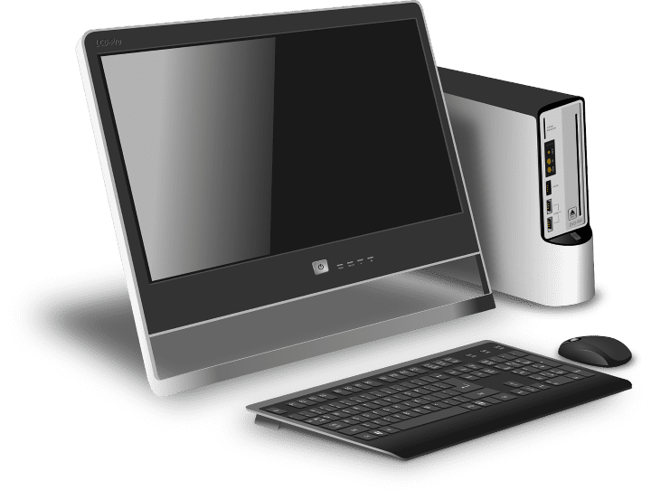
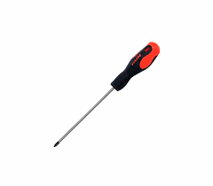
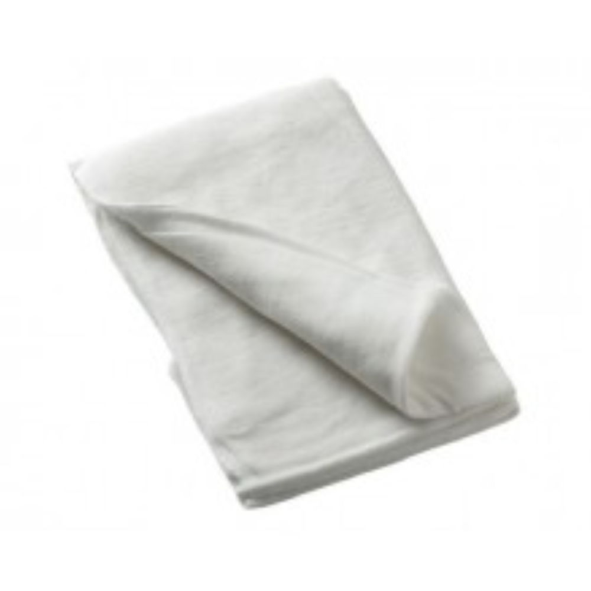
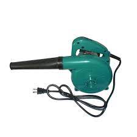
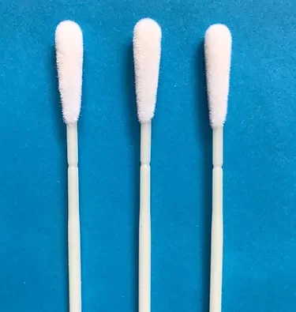
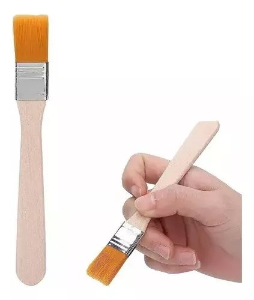
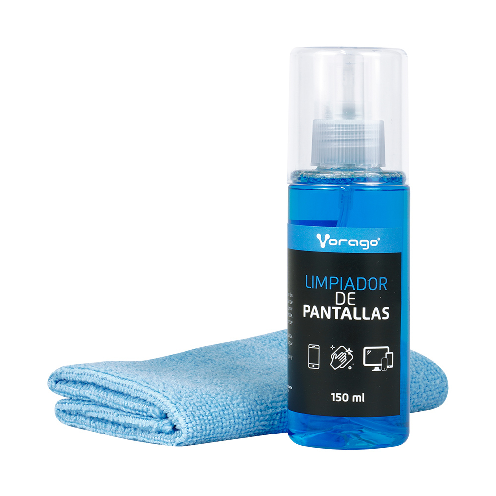
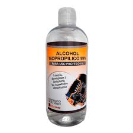

¿Que es Mantenimiento Preventivo?
Es aquel que se realiza de manera anticipada con el fin de prevenir el surgimiento de averías en equipos, maquinarias, vehículos automotores, artefactos, entre otros. Consiste en llevar a cabo acciones como ajustes, limpieza, análisis, lubricación, calibración, reparación y cambios de piezas, entre otras. En el área de informática, el mantenimiento preventivo implica la revisión del software y hardware de una computadora para garantizar un funcionamiento confiable y una mayor velocidad de intercambio de información. Su objetivo principal es evitar o mitigar las consecuencias de posibles fallos en los equipos, evitando que ocurran antes de que se produzcan. El mantenimiento preventivo se realiza en equipos en condiciones de funcionamiento, a diferencia del mantenimiento correctivo, que repara o pone en funcionamiento aquellos equipos que han dejado de funcionar o están dañados.
¿Que es mantenimiento preventivo del hardware?

se refiere a las acciones y tareas que se llevan a cabo para evitar posibles problemas en los componentes físicos de un ordenador. Estas acciones incluyen la limpieza regular de los componentes, la revisión y reemplazo de cables y conectores desgastados, la actualización de controladores y firmware, así como la optimización de la refrigeración del sistema.
Herramientas para el Mantenimiento
Preventivo
Destornillador de estrias:
 No es necesario tener una caja de herramientas para armar una pc, con solo tener un destornillador de estrias es suficiente y como minimo para usar otra herramienta un destornillador de pala.
Tomar fotos antes de desarmar la PC:
Es necesario tomar unas fotos antes de desarmar la pc, porque hay diferentes modelos y formas en como esta fabricada la propia pc, entonces puede haber confusión en volver a instalar los componentes y después se vuelve tedioso armarla.
Trapos de Algodon:
 Se puede utilizar para remover suciedad que este bastante aderida a la pc.
Soplador:
 Pemueve el polvo con mucha facilidad sin hacer contacto con los componentes.
Hisopos:
 Limpia los componentes que sean delicados y también zonas que sean dificiles de limpiar.
Brocha:
 Los cepillos también se utilizan para la limpieza interna regular del PC, en caso de no poseer una se recomienda utilizar una brocha que este sin utilizar.
Limpiador de Pantallas:
 Este tipo de producto es fundamental para poder limpiar el monitor sin dañarlo o rayarlo sin ningun problema.
Alcohol Isopropílico:
 Este alcohol es conocido por su capacidad para eliminar la grasa con gran facilidad, lo que ofrece una gran seguridad al realizar alguna operación.
Daniel Madero, Edgmairis Apostol y Jesús Peréz